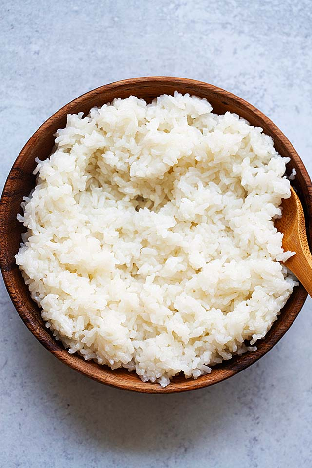

Rice

Description
you boil rice, but it's edible
ingredients
steps
- wash the rice
- mix water with rice
- remove the water
- repeat until the removed water is clear instead of foggy
- place rice + equal part water (1:1) in an unheated pot, and cover
- turn up the heat until it boils
- set heat to low ,wait 15 minutes
- turn heat off, wait 10 minutes
- (optional) slap it inside of a sandwich, for better texture and some extra flavor.